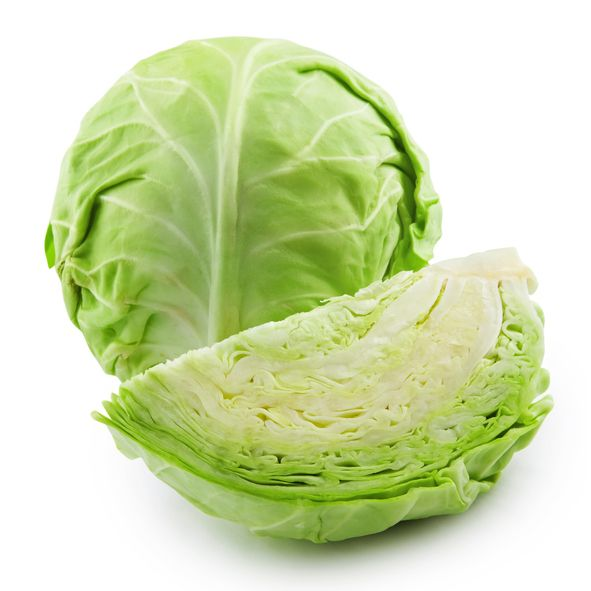
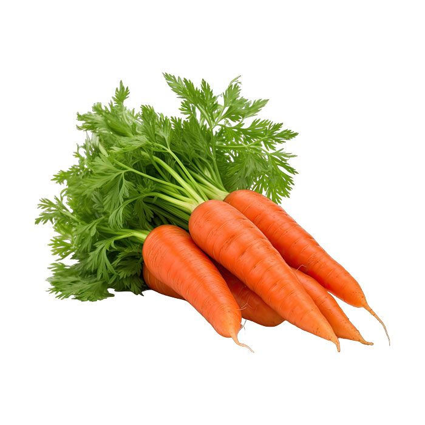
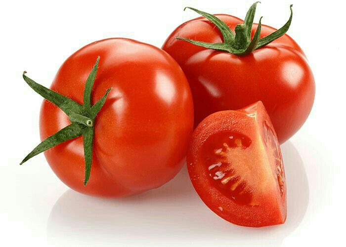
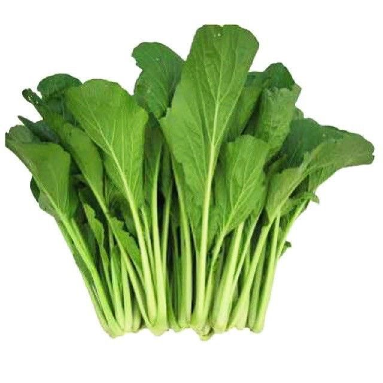
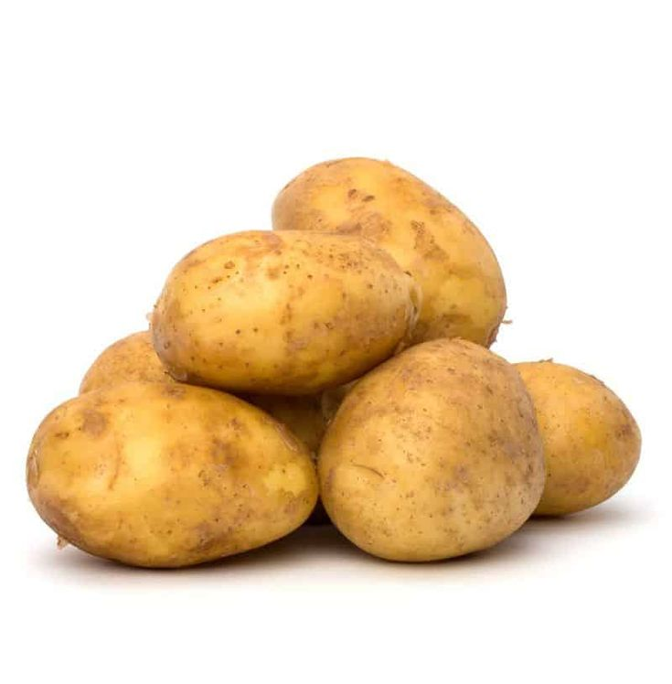
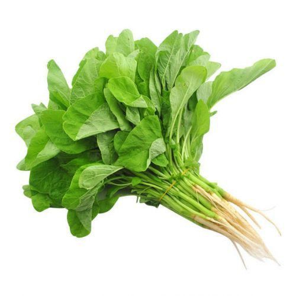

SayuranKol Segar
Pilihan sayuran untuk sup, tumisan, dan beragam hidangan keluarga.
Harga contoh
Pesan
Rp 6.000 / kg
HASIL KEBUN LOKAL · GIRIMULYA
Kenali pilihan sayuran untuk kebutuhan sehari-hari. Lihat informasi produk dan harga contoh, lalu hubungi kami untuk memastikan ketersediaan serta pemesanan.
Pilihan sayuran untuk melengkapi kebutuhan dapur Anda.

SayuranPilihan sayuran untuk sup, tumisan, dan beragam hidangan keluarga.

SayuranCocok untuk sup, tumisan, dan berbagai olahan makanan sehari-hari.

SayuranPelengkap sambal, sup, tumisan, dan beragam masakan rumahan.

Sayuran daunSayuran daun untuk tumisan, sup, dan aneka hidangan sehari-hari.

Sayuran umbiDapat diolah menjadi perkedel, kentang goreng, sup, dan beragam hidangan.

Sayuran daunHubungi kami untuk menanyakan ketersediaan stok, harga terbaru, jumlah pembelian, dan informasi pengiriman.